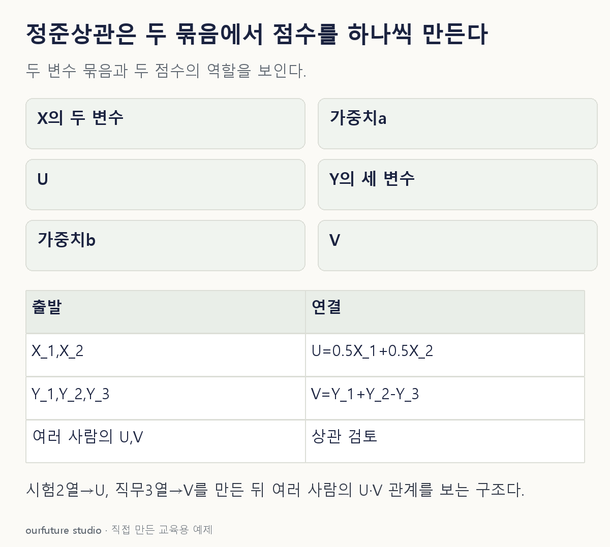

조건을 바꾸며 확인하기
단위·중심화가 이미 정해졌다고 가정한 설명용 점수다. 원변수 단위가 다른 실제 CCA의 적합·안정성 검증을 대신하지 않는다.
기본 예제와 비교하기
아래 그림과 표는 글의 기본 조건입니다. 입력을 바꾼 결과는 계산 칸에서 확인하세요.

같은 문제를 직접 골라 보기
여러 사람 각각에게서 시험 두 과목과 직무지표 세 개를 함께 관측해 두 변수 묶음의 선형 관계를 탐색한다.
조건을 더 바꾸면?
설명용 가중치를 그대로 두고 X=(4,4), Y=(2,3,1)이면 (U,V)는?
변형 풀이 확인
(4,4).
U=0.5×4+0.5×4=4, V=2+3−1=4다. 가중치는 고정되어 있고 새로 CCA를 적합한 것은 아니다.
두 묶음, 두 선형결합, 그 사이 상관.